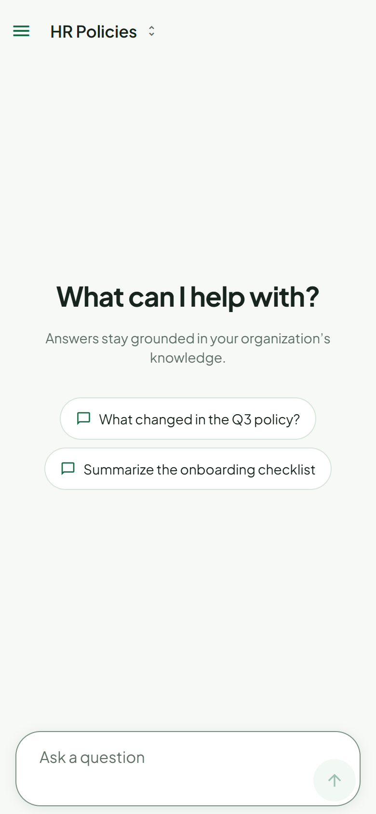
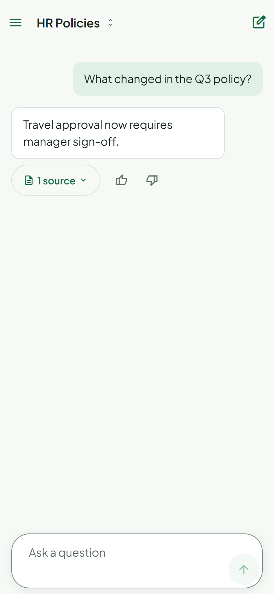
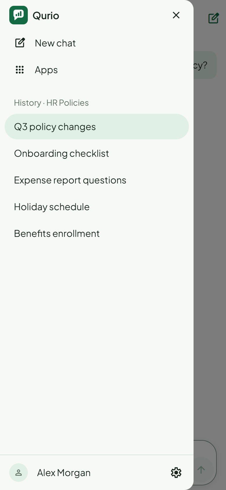
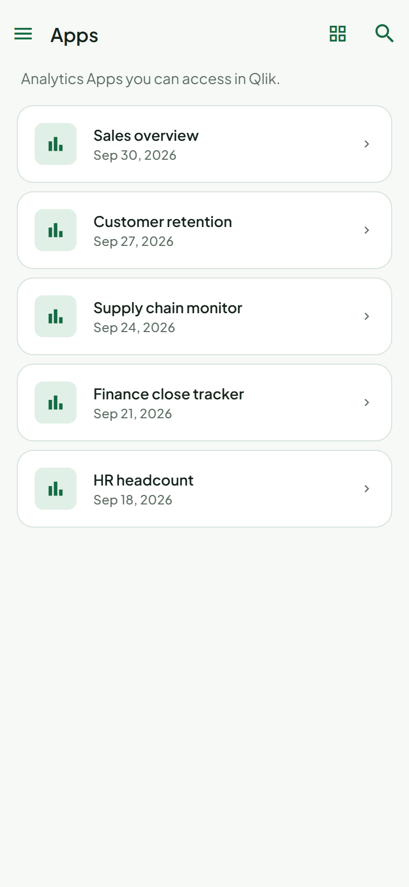

Introducing MTC's custom analytics app
Qurio is a native iOS and Android app for Qlik Cloud. It puts Qlik Answers Assistants and your Analytics Apps side by side, and each person signs in as themselves.

The problem
How can MTC recreate essential Qlik Analytics functionality in a customizable application, while integrating an AI-powered conversational experience through Qlik Answers?
Qlik's mobile app is strong for dashboards. Its store listings and mobile help do not mention Qlik Answers. Qlik supports Answers chat in mobile browsers, but a no-browser-access requirement rules that route out.
A native app that signs each person in to their own Qlik Cloud Tenant and puts Assistants and Analytics Apps in one place, in an interface MTC can tailor.
One place to ask and to look. Answers cite their sources. Access stays governed by the permissions Qlik already enforces.
Qlik facts: App Store, Google Play and help.qlik.com, read 15 Oct 2026. Qlik Answers is a Qlik Cloud capability. This slide does not say Qlik lacks conversational AI.
The solution
iPhone · Android
Built by MTC
Managed by Qlik
Key features
Choose an Assistant. Tap a suggested Starter or type a question.
Implemented
Streamed Answers, Stop, Citations, and Feedback with a reason.
Implemented
Reopen, rename, pin and delete conversations. Pins sync through Qlik.
Implemented
Search, list or grid, paging, pull to refresh. Opens in Qlik's view.
ListViewer: PoCLive demonstration
Fallback: recorded walkthrough, then the web preview with sample data.
System architecture
Security and access management
Native Qlik Analytics vs. MTC application
| Qlik Analytics mobile app | Qurio (MTC) | |
|---|---|---|
| Analytics | Full Sheets, native charts, offline apps for 7 days | App list with search. Opens Qlik's embedded view (PoC). Online only. |
| Dashboard interaction | Selections, filter panes, bookmarks, View data | Qlik's own interactions inside the embedded view (PoC) |
| Conversational | Store listings and mobile help do not mention Qlik Answers. Answers works in mobile browsers. | Native Assistant chat with sources and feedback. Agentic Assistant in Qlik's UI (PoC). |
| UI customization | Qlik's design and roadmap | MTC controls layout, navigation and branding |
| Integration | First-party. Intune MAM for enterprise policy. | Published REST APIs and qlik-embed. Any MDM via standard app config. |
| Workflows | Alerts, push, monitored charts, several Tenants | Ask → check sources → rate. One Tenant at a time. No alerts. |
| Security responsibility | Qlik owns app and data handling | Qlik enforces access. MTC owns tokens, storage and lock on the device. |
| Maintenance | Qlik ships about monthly, at no cost to MTC | MTC maintains two platforms, regional OAuth clients and runtime re-checks |
Qlik column: App Store, Google Play, help.qlik.com, read 15 Oct 2026 (docs/research-qlik-analytics-comparison.md). Absence in Qlik's materials is not proof of absence in the product.
Evaluation
Conclusion
Qurio is a customizable analytics experience powered by Qlik: governed answers and your Analytics Apps, in one native app.
Qlik Answers on mobile, without a browser, beside the apps people already use.
Sign-in, Assistant chat with sources and feedback, History, Apps list, device protection.
Direct to your Tenant on Qlik's APIs and embed runtime. Qlik keeps control of data and access.
Thank you. We would value your feedback on priorities.